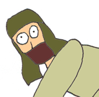

Hunter Technology
|
Hunter Transportation Known Only as: the Coolia
Wise Old Coolia: The Hunters domesticate us Coolias and use us as a form of transportation. They also make us pull carts, to carry supplies long distances.
Young Energetic Coolia: That seems like a lot of hard work!
Wise Old Coolia: Yeah, and the worst thing is, they reward us with Junio Seeds, not a very good food for a Coolia!
Young Energetic Coolia: Speaking of Coolias, that decrepit old Coolia over there, kind of looks like you.
(A Coolia can be seen in the distance)
Wise Old Coolia: Why I think he looks quite handsome!
|
A Coolia will most likely have to pull a cart long distances, as the Hunters travel from one place to the next. |
Some Coolias are stubborn, and can be hard to tame. |
Junio Seeds aren't the best food for a Coolia. |


The Hunter's Gun
Wise Old Coolia: The most important thing to a hunter is his gun. Without his gun, he will have no means to protect himself against monsters, and would surely die. In some rare instances, a hunter will come across an Ancient Age gun. A weapon of this power would exponentially increase the survival of the community, and would increase the success rate of monster kills.
Young Energetic Coolia: Watch this, I can be a hunter too!!!!
An'jou: Here you go nice Coolia, have some more delicious Junio Seeds! :) An'jou: What a good Coolia you are!  An'jou: AHHHHHHHHHHH! I'VE BEEN SHOT IN THE ASS!!!!!!!!!!!
Young Energetic Coolia: OOPS! SORRY!!! |
This hunter can be seen admiring his gun. |
This hunter is in possession of an Ancient Age gun. |